CMSC424: Query Processing — Sort-Merge Join, Aggregation, and External Memory
Instructor: Amol Deshpande
1. Introduction
In the previous set of notes, we covered selection implementations (sequential scan, index scan) and join implementations (nested loops, index nested loops, hash join, and hash-based outer joins). We now complete our tour of query operator implementations with three remaining topics.
First, we cover sort-merge join, a join algorithm that takes a fundamentally different approach from hash join and nested loops — one based on the merge step of merge sort. Second, we cover several additional operators: group-by and aggregation, duplicate elimination, and set operations (UNION, INTERSECT, EXCEPT). Finally, we address a practical but important situation: what happens when a relation is too large to fit in memory? We discuss two external memory algorithms — partitioned hash join and external sort-merge — that handle this case through a divide-and-conquer approach.
These external memory ideas are also the conceptual foundation for joins in distributed systems like Apache Spark, so they are worth understanding even if you rarely encounter them in single-machine settings today.
2. Sort-Merge Join
2.1 The Algorithm
Every join algorithm we have seen so far has an asymmetric structure: one relation plays the “outer” role (we iterate over it) and the other plays the “inner” role (we look things up in it). Sort-merge join is different — it treats both relations symmetrically and processes them in lockstep.
The precondition for sort-merge join is that both relations must be sorted on the join attribute. If they are not already sorted, a separate sort step must precede the join. In database systems, sorting is implemented as a dedicated physical operator (not baked into the join) precisely because it is needed by so many operations — aggregation, duplicate elimination, set operations, and ORDER BY, in addition to sort-merge join.
Once both relations are sorted, the merge proceeds exactly as in the merge step of merge sort. Maintain one pointer into each relation. At each step, compare the join attribute values at the two current positions:
- If they are equal, the two tuples join — emit the result tuple and advance one of the pointers.
- If the left value is smaller, the left pointer’s tuple cannot join with anything in the right relation (since both are sorted and all remaining right values are at least as large). Advance the left pointer.
- If the right value is smaller, advance the right pointer.
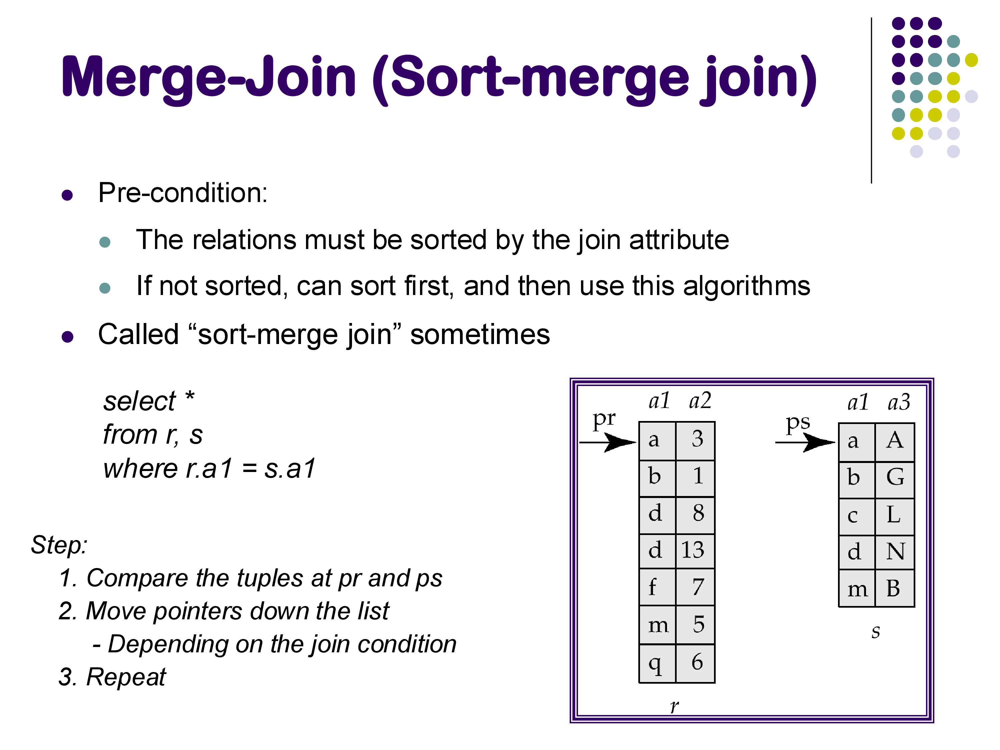
There is one complication: the join attribute may not be unique, so duplicate values can appear in both relations. When the current values in both relations are equal, there may be a group of matching tuples on each side, all of which must be combined with each other. The algorithm must track the start of each matching group and reset the pointer when processing the next tuple. This requires a little extra bookkeeping, but the logic is not fundamentally more complex. If you have reviewed merge sort recently, this algorithm should feel very familiar — the difference is only that we produce join tuples rather than a merged sorted sequence.
2.2 Cost and Benefits
If both relations are already sorted on the join attribute, sort-merge join is optimal: it reads each block of R and S exactly once, for a total cost of b_R + b_S block transfers. You cannot do better than this — any join algorithm must at minimum read both relations. If the relations are not pre-sorted, the sorting cost must be added, but sorting is itself a well-optimized operation.
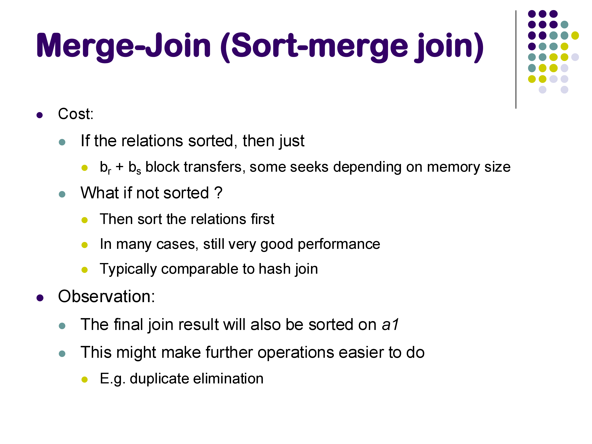
The key advantage of sort-merge join over hash join is memory efficiency. Hash join requires holding all of the smaller relation in memory (as a hash table). Sort-merge join only needs to maintain the two current pointers and a small amount of buffer — effectively a few blocks at a time. For very large relations with limited memory, this matters significantly.
A second noteworthy property is that the output of sort-merge join is sorted on the join attribute. This can be exploited by operators further up the query plan — for example, a duplicate elimination or an ORDER BY that would otherwise require an additional sort can often be eliminated or made cheaper. Earlier database systems often preferred sort-merge join specifically because of this property, and PostgreSQL still exploits it when generating query plans.
2.3 Sort-Merge Join vs Hash Join
How do these two algorithms compare overall? This question has generated a surprisingly rich debate in the database literature over the past few decades, with papers in the 1990s and 2000s alternately arguing that hashing or sorting is superior. The honest answer is that they are roughly equivalent — both read each relation a small, bounded number of times, and both have the same asymptotic I/O complexity.
For large-memory systems, hash join tends to have slightly better constants because it avoids the overhead of sorting. But the difference is often small, and the choice can flip depending on the specific hardware, data distribution, and workload. In practice, if you were building a new system today, either is a perfectly valid default. Many production databases (including PostgreSQL) implement both and let the query optimizer choose based on estimated costs.
2.4 Outer Joins with Sort-Merge
Just as hash join can be extended to support outer joins (as covered in the previous set of notes), sort-merge join can also be extended to handle left outer, right outer, and full outer joins — and the extension is quite natural.
During the merge, whenever the left pointer’s current value is smaller than the right pointer’s current value, we know that the left tuple has no matching partner in the right relation. In a regular inner join, we simply skip it. In a left outer join, we instead emit it padded with NULLs. The same logic applies symmetrically for right outer join. The code changes are minor — a few extra checks and an emission step for unmatched tuples.
This is in contrast to index nested loops join, where right outer join is awkward: the algorithm naturally visits every R tuple and can detect when it has no match, but identifying unmatched S tuples requires a separate scan of S. With sort-merge, both sides are traversed simultaneously, so both directions of unmatched detection are equally easy.
3. Summary of Join Algorithms
At this point, we have covered four join algorithms. It is worth summarizing their characteristics before moving on.
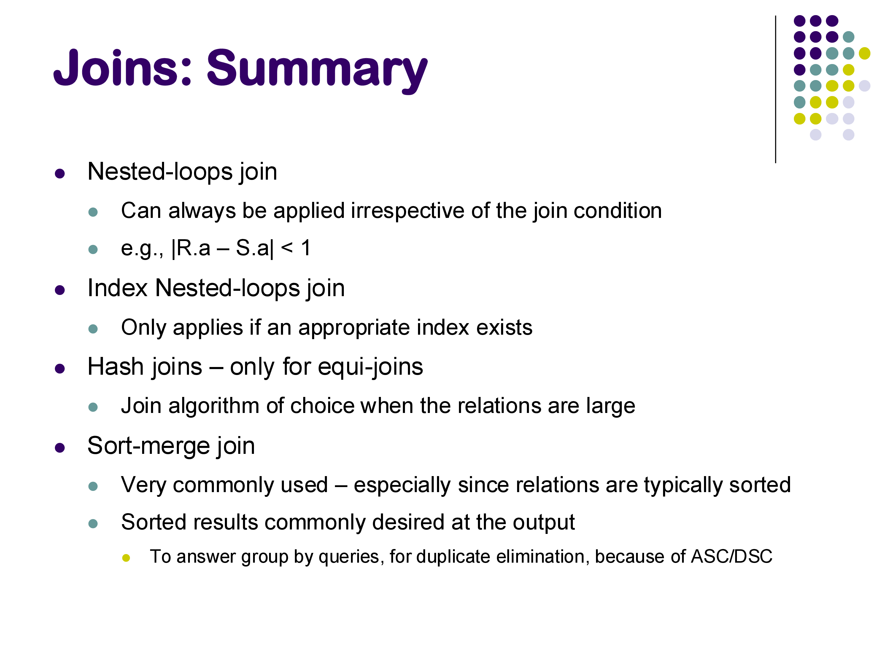
Nested loops join is the simplest: two for-loops, one over R and one over S. It is always applicable (any join condition, any data), but its cost is O(|R| × |S|) — prohibitively expensive for large relations. Database systems use it only when one of the relations is very small (often reduced to a handful of tuples by a preceding selection).
Index nested loops join replaces the inner loop with an index lookup on S. It is restricted to conditions where an appropriate index exists (typically equi-joins or range conditions), but when applicable and when R has few tuples, it can be dramatically faster than the alternatives. However, the performance depends heavily on accurate row count estimates — if the optimizer thinks R will have 10 tuples but it actually has 100,000, the plan degrades badly.
Hash join is the workhorse of modern database systems for large-relation equi-joins. Build a hash table on the smaller relation, probe with the larger. Its cost is essentially O(|R| + |S|) — linear in both inputs. It only supports equi-joins (range conditions cannot be answered with a hash table), but equi-joins are by far the most common case. You will see hash joins in PostgreSQL EXPLAIN output very frequently.
Sort-merge join achieves the same O(|R| + |S|) cost as hash join (when both are pre-sorted), uses less memory, and produces sorted output. Its main disadvantage is the need to sort both inputs first if they are not already sorted. Like hash join, it is primarily used for equi-joins.
4. Group-By and Aggregation
SQL’s GROUP BY clause combined with aggregate functions (COUNT, SUM, AVG, MIN, MAX) is one of the most heavily used features in analytical queries. Implementing it efficiently is an important part of a database system’s job.
4.1 Hash-Based Approach
The hash-based approach maintains a hash table whose keys are the grouping attribute values and whose values are the running aggregate state for each group. As tuples are processed one by one, each tuple is hashed to find its group’s entry in the hash table, and the aggregate state for that group is updated.
Consider the query SELECT A, COUNT(B) FROM R GROUP BY A. We process R’s tuples in any order:
- When we see a tuple with A=1, we look up key 1 in the hash table. If no entry exists, we create one with count=0. We then increment the count to 1.
- For the next tuple with A=2, we create a new entry with count=1.
- For a second tuple with A=1, we look up key 1 and increment its count to 2.
- And so on.
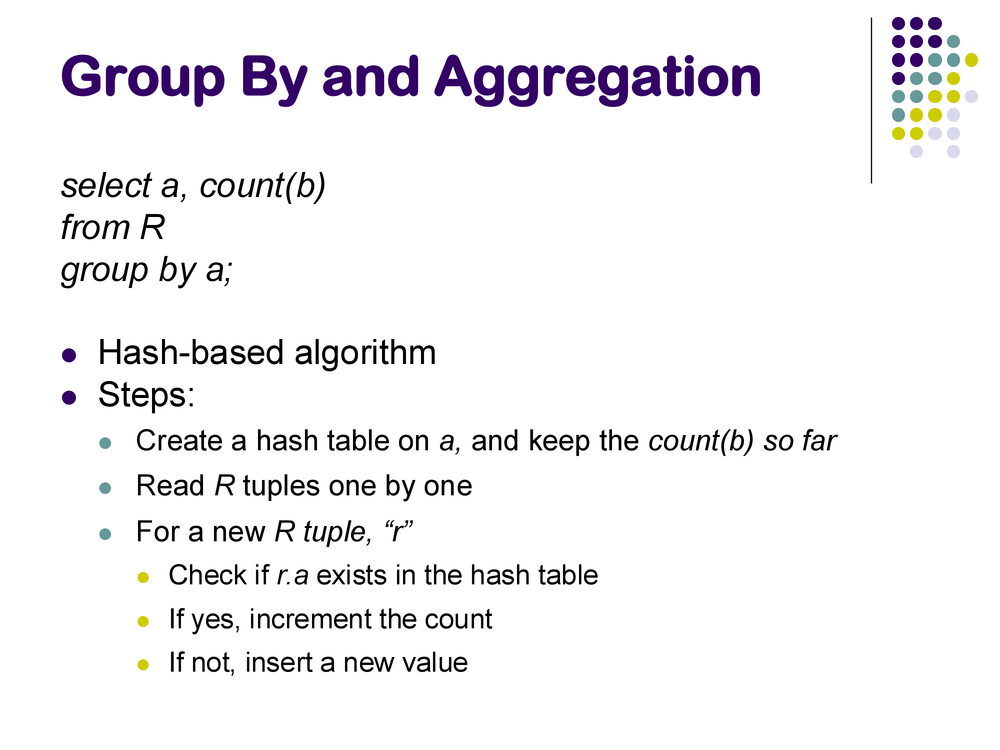
The key insight is that we need not store the actual tuples in the hash table — only the aggregate state. The amount of state per group depends on which aggregate we are computing:
- COUNT: a single integer counter.
- SUM: a single running sum.
- MIN, MAX: a single running minimum or maximum.
- AVERAGE: two values — a running sum and a running count. We divide at the end.
- Standard deviation: sum, sum-of-squares, and count — three values suffice via the online formula.
- COUNT DISTINCT, MEDIAN, MODE: these have no compact running representation. We must collect the full list of values for each group and process them at the end. For MEDIAN, sorting the group’s values at the end is the typical approach.
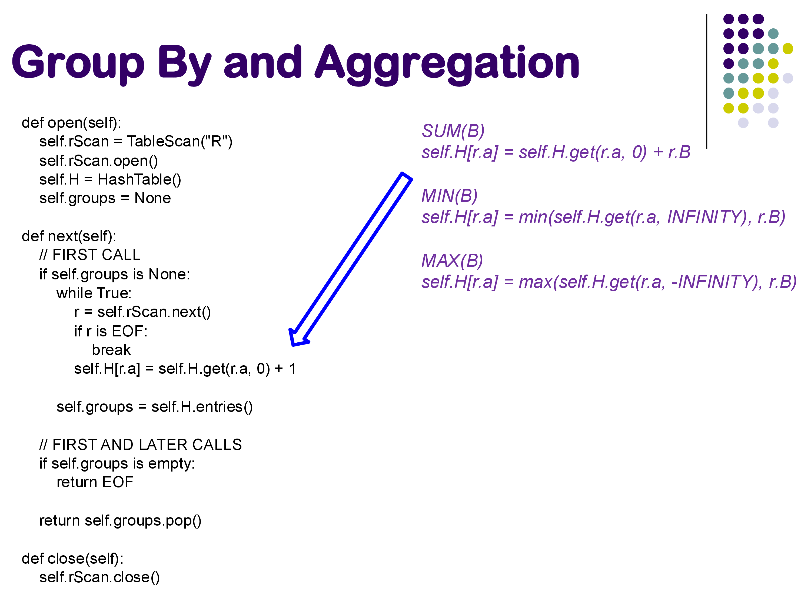
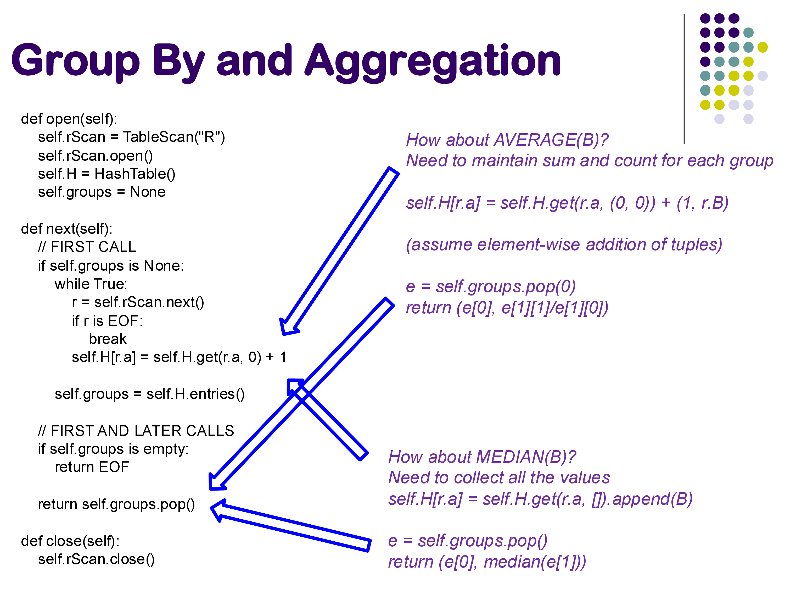
In PostgreSQL, the physical HashAggregate operator handles COUNT, SUM, MIN, MAX, and AVG within a single implementation using overloaded aggregate transition functions. Median and mode are handled by separate code paths. The conceptual structure — a hash table updated tuple-by-tuple — is the same.
4.2 Iterator Model Implementation
There is an important subtlety in fitting hash-based aggregation into the iterator model. Recall that next() is supposed to return one tuple at a time. But hash-based aggregation is an inherently blocking operator: we must process all input tuples before we can produce any output, because a later tuple might update a group we already partially computed.
The standard solution is lazy initialization: the hash table is not built during open(), but rather during the first call to next(). The open() call simply creates the data structure and sets a flag indicating that the hash table has not yet been populated. When next() is first called and the flag indicates the table is empty, the operator reads all of R, builds the complete hash table, and then begins returning one entry at a time. Subsequent calls to next() simply pop the next entry from the completed table.
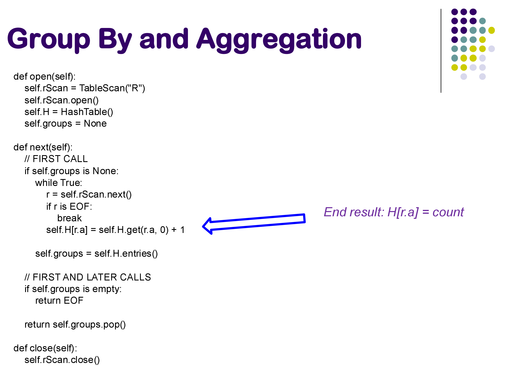
This lazy-first-call pattern is the standard way to handle blocking operators in the iterator model. It ensures that open() is cheap and predictable (consistent with the convention that open() should not touch data), while the actual computation happens the first time output is requested.
4.3 Sort-Based Approach
An alternative is the sort-based approach. Sort the relation by the grouping attribute first. After sorting, all tuples belonging to the same group are contiguous. A single pass over the sorted relation then suffices: maintain the current group key and running aggregate; when the key changes, emit the previous group’s result and start a new one.
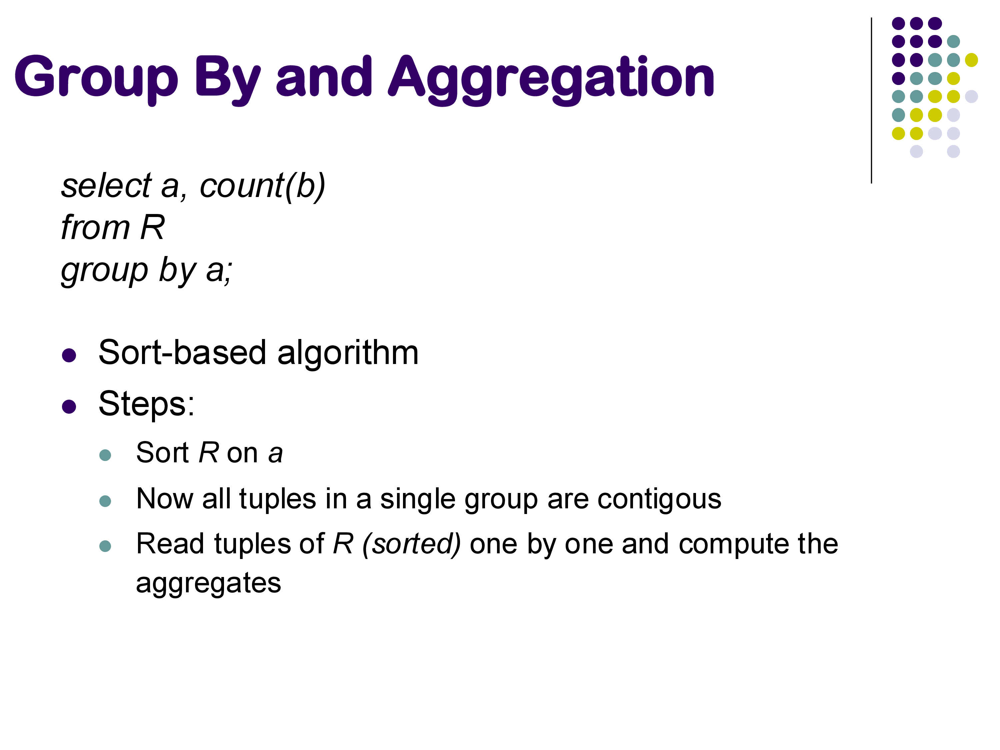
The sort-based approach is often simpler to implement correctly, and it handles order-sensitive aggregates (median, mode) more naturally — once the group’s tuples are contiguous and already sorted, finding the median is trivial. It is particularly attractive when the data arrives pre-sorted (e.g., as output from a sort-merge join or an ordered index scan), in which case the sorting cost is zero. For fresh unsorted data, the overhead of sorting must be weighed against the hash table construction cost of the hash-based approach.
5. Duplicate Elimination
Duplicate elimination — the physical operation behind SELECT DISTINCT — is closely related to grouping and uses the same two basic strategies.
The sort-based approach (shown in the slide below) is straightforward: sort the relation, then scan it linearly. Each tuple is compared to the previous one; if they are identical, discard the current tuple. If they differ, emit it. Because identical tuples are adjacent after sorting, this single pass eliminates all duplicates.
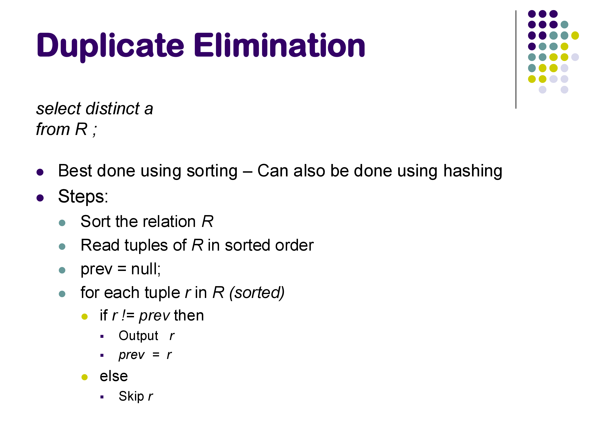
The hash-based approach builds a hash set rather than a hash table: when a tuple is encountered, hash it and check whether it already appears in the set. If not, add it and emit it; if yes, discard it. This is essentially a group-by with no aggregate — we just want to know which groups exist.
In PostgreSQL, the same HashAggregate physical operator that implements group-by also implements duplicate elimination. There is no separate “distinct” operator in the execution engine — both logical operations map to the same physical code. This is a concrete example of the general principle that physical operators can handle multiple logical operations, and that the distinction between physical and logical operators is meaningful and important.
6. Set Operations
SQL’s set operators — UNION, UNION ALL, INTERSECT, and EXCEPT — have straightforward implementations built from the primitives we have already discussed.
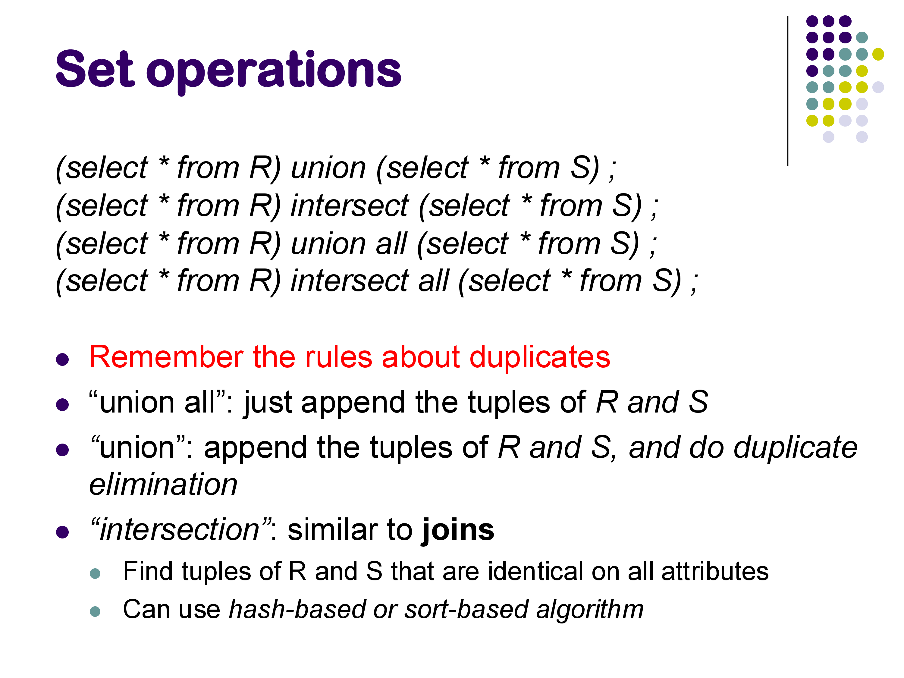
UNION ALL is the simplest case: output all tuples from R followed by all tuples from S, with no deduplication. The physical plan is simply an Append operator that concatenates two input streams. No extra computation is required.
UNION requires deduplication: output every distinct tuple that appears in R or S. The logical plan is: append R and S, then apply duplicate elimination. In PostgreSQL, this becomes Append → HashAggregate. Note that even though the query contains no GROUP BY or aggregate functions, the physical operator used is HashAggregate — because that is the physical operator that implements deduplication in PostgreSQL. This is another illustration of why the physical and logical layers must be understood separately.
INTERSECT asks for tuples that appear in both R and S, with duplicates removed. Semantically, this is equivalent to a natural join on all attributes: a tuple appears in the intersection if and only if it matches in both relations. Accordingly, INTERSECT can be (and often is) implemented using standard join algorithms. PostgreSQL uses a HashSetOp Intersect operator internally.
EXCEPT (or MINUS in some dialects) asks for tuples that appear in R but not in S. This is an anti-join: retain R tuples that have no matching partner in S. It can be implemented similarly to INTERSECT with appropriate modifications to the matching logic.
A useful observation from seeing these operators in a live PostgreSQL query plan: the system chose HashAggregate for UNION even though the query contained no aggregation. This nicely illustrates how the database’s physical operator vocabulary is smaller than the SQL vocabulary — a few general-purpose physical operators (hash table building, sorting, appending) implement a much larger set of logical constructs.
7. External Memory Algorithms
All of the join, aggregation, and sorting algorithms discussed so far share a common assumption: at least one of the relations (or some critical data structure built from it) fits entirely in memory. This assumption is increasingly often satisfied — modern servers can have hundreds of gigabytes of RAM, and many working datasets fit comfortably. But when relations are very large, or when many queries are running simultaneously and competing for memory, this assumption breaks down.
When it does, we need external memory algorithms — divide-and-conquer strategies that explicitly manage what lives in memory versus on disk. There are two main approaches: partitioned hash join and external sort-merge. Notably, the same ideas that solve this problem on a single machine also solve the problem of doing joins across multiple machines in distributed systems like Apache Spark — we will revisit this connection when we discuss parallel architectures.
7.1 Partitioned (External) Hash Join
Recall the simple hash join: read S into memory, build a hash table on the join attribute, then probe with R. If S is too large to fit in memory, we cannot build this hash table.
The partitioned hash join solves this by splitting both relations into smaller pieces before attempting to join them.
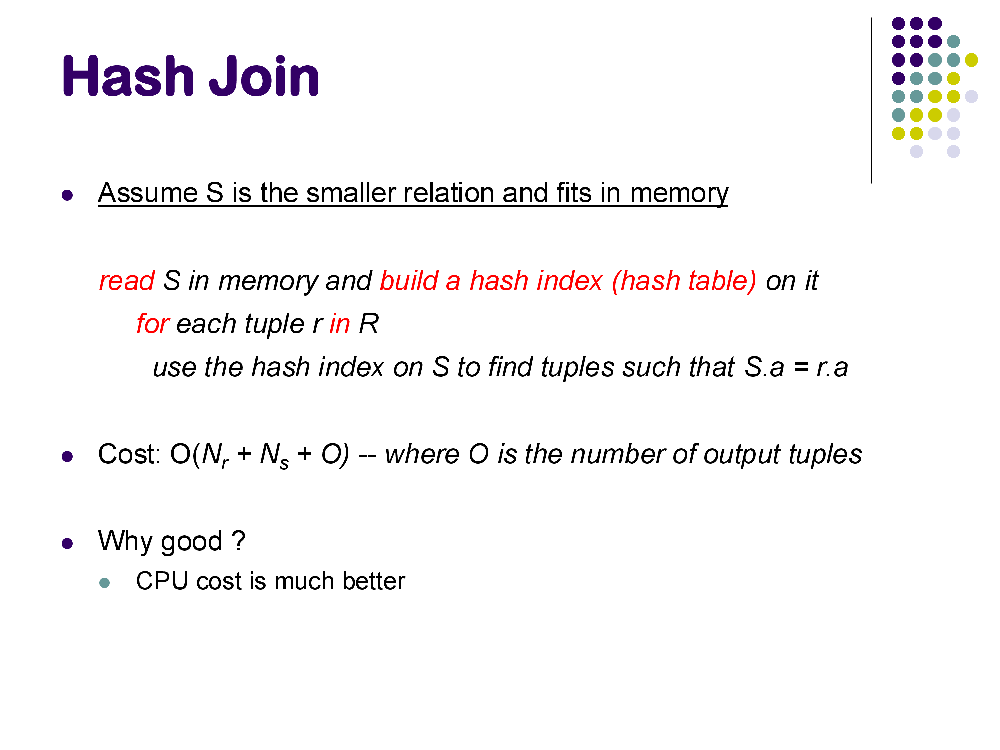
The key insight: if we partition both R and S on the join attribute using the same partitioning function, then a tuple in partition Rᵢ can only possibly join with a tuple in partition Sᵢ — never with a tuple in Sⱼ for j ≠ i. This is because the join is an equality condition on the partitioned attribute, and the partitioning ensures that Rᵢ and Sᵢ contain exactly the same set of join attribute values. Therefore:
\[R \bowtie S = (R_1 \bowtie S_1) \cup (R_2 \bowtie S_2) \cup \cdots \cup (R_N \bowtie S_N)\]
We can join the partition pairs independently and concatenate the results.
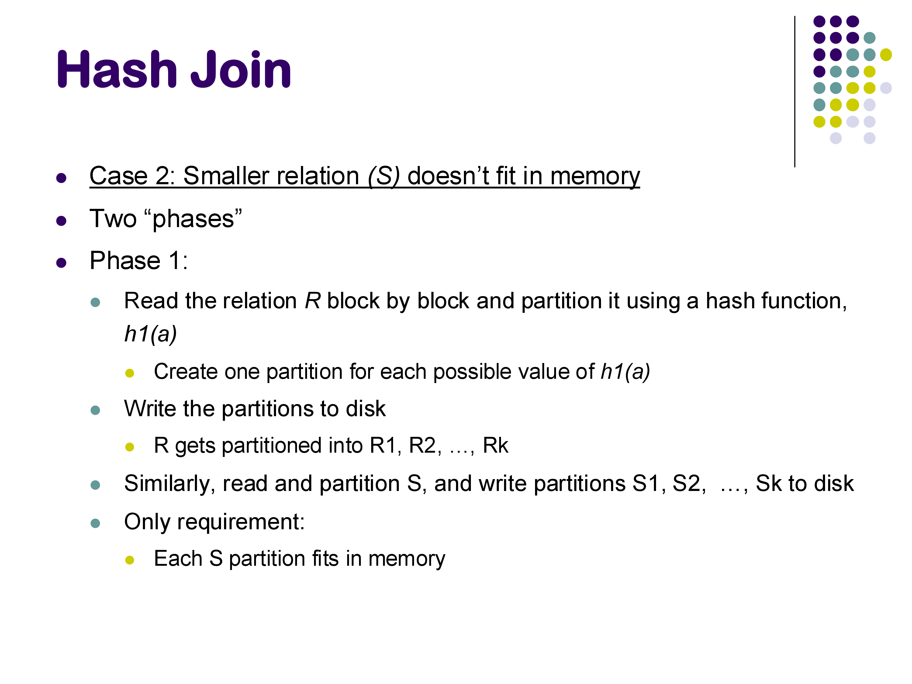
Phase 1 — Partitioning: choose a number of partitions N such that each Sᵢ will fit in memory. Scan S and route each tuple to partition Sᵢ = h₁(s.joinattr) mod N, writing each partition to disk. Do the same for R. At the end of Phase 1, we have N partition files for R and N partition files for S, all on disk.
Phase 2 — Joining: for each i from 1 to N, read partition Sᵢ into memory, build a hash table on it using a second hash function h₂, then scan Rᵢ and probe the hash table to find matches. Emit all joining tuples.
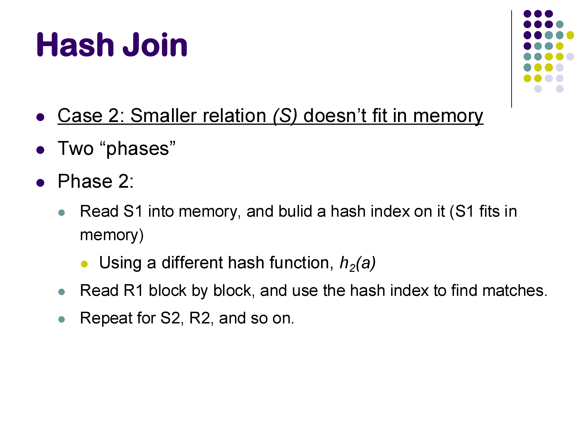
Why two hash functions? The first function h₁ is used for partitioning — it determines which of the N partitions a tuple belongs to. The second function h₂ is used inside the in-memory hash table within each partition. These must be different functions; using the same function for both would cause all tuples with the same join attribute value to hash to the same bucket in the in-memory table, degrading performance.
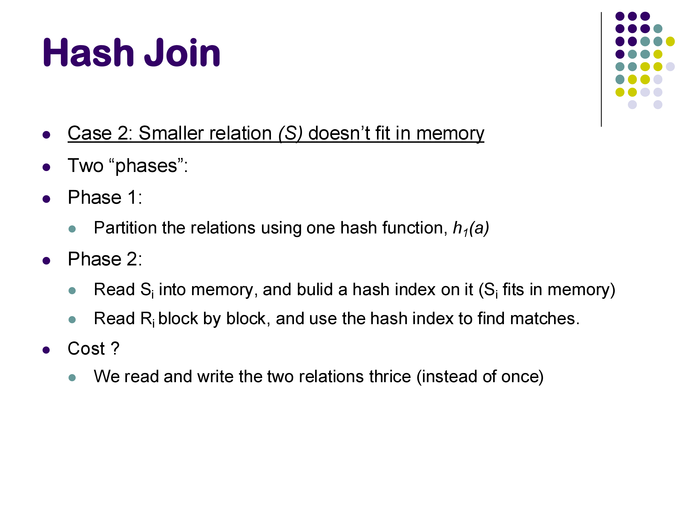
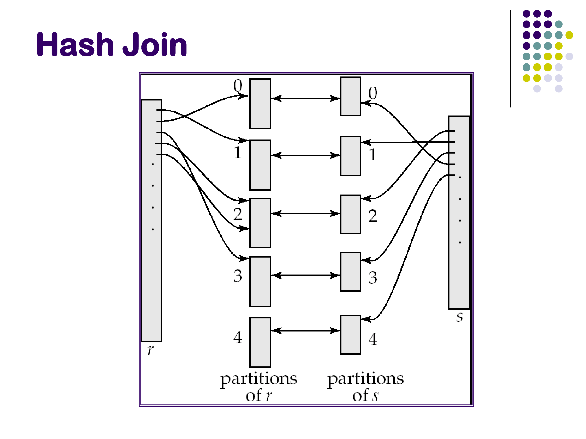
Cost: Phase 1 reads R and S once and writes N partition files for each (total: 2 × (b_R + b_S) writes). Phase 2 reads all partitions once more (total: b_R + b_S reads). Overall, each block of R and S is read and written approximately 3 times — significantly more than the simple in-memory hash join.
Practical challenges: Guaranteeing that each Sᵢ fits in memory requires that h₁ distributes tuples uniformly across partitions. Real hash functions have variance — some partitions may end up larger than others due to data skew or an unlucky hash function. The standard practice is to create more partitions than strictly necessary to absorb this variance. If a partition still turns out to be too large, it can be re-partitioned recursively using a different hash function.
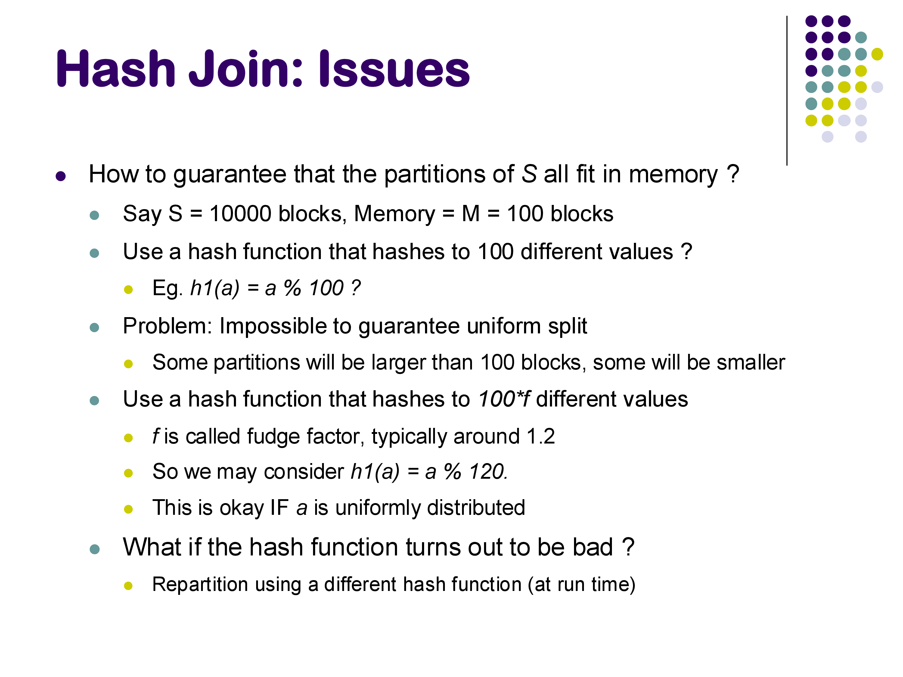
Practical reality today: this algorithm is expensive precisely because everything goes to disk during Phase 1. In modern systems with large memories, you rarely need it — most relations fit comfortably in memory. The partitioned hash join is more important as a conceptual foundation for distributed join processing: in Apache Spark, the “partitions” are sent to different machines across a network rather than to different files on disk. The algorithm structure is identical.
7.2 External Sort-Merge
Sorting is one of the most fundamental operations in database query processing. It underlies sort-merge joins, duplicate elimination, aggregation (sort-based), and any query with an ORDER BY clause. When a relation fits in memory, we can use any standard in-memory sort algorithm — Quicksort is typically the best choice in practice due to excellent cache performance. When the relation does not fit in memory, we use external sort-merge.
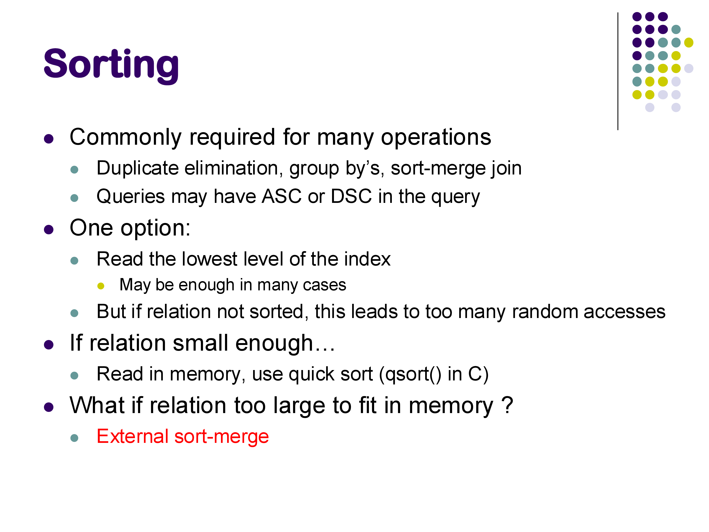
The algorithm has two phases.
Phase 1 — Creating sorted runs: Read as many blocks of the relation as fit in memory (M blocks at a time). Sort this in-memory chunk using Quicksort and write it back to disk as a sorted run. Repeat for the next M blocks, and continue until the entire relation has been processed. After Phase 1, the relation on disk has been divided into ⌈b_S / M⌉ sorted runs, each of length M blocks. The runs are sorted internally, but not yet merged with each other.
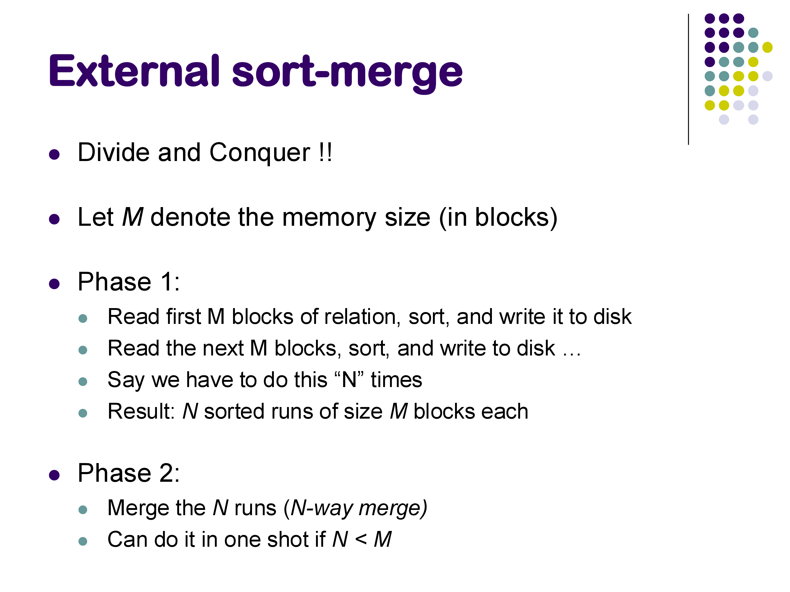
Phase 2 — Merging: Merge all the sorted runs simultaneously using an N-way merge, where N is the number of runs. This is exactly the merge step of merge sort, generalized to N inputs. Maintain one buffer block per run and one output buffer. At each step, find the minimum current value across all run buffers, emit it, and advance the corresponding run’s pointer. This requires N + 1 blocks of memory — one per run plus one for output.
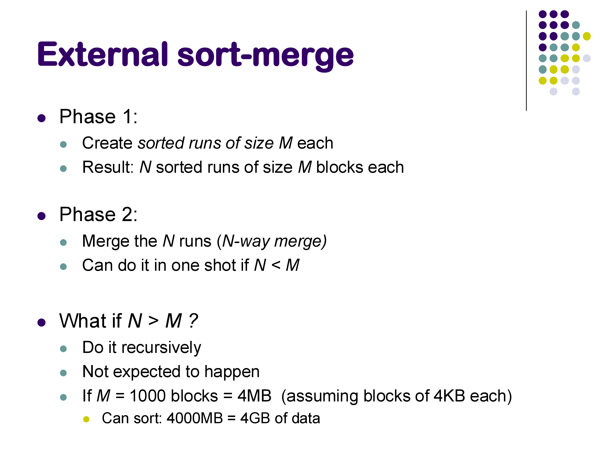
Memory requirement: Phase 1 creates ⌈b_S / M⌉ runs. Phase 2 needs one buffer block per run, so we need memory for ⌈b_S / M⌉ + 1 blocks during merging. For Phase 2 to be feasible with M blocks of memory, we need M ≥ √b_S. For a relation of 1 million blocks, this means needing only 1,000 blocks of memory — a very easy requirement to satisfy in practice. Almost all real-world cases need only this single merge pass (two phases total). Recursive merging (merging the runs in groups before a final merge) is theoretically possible but rarely necessary.
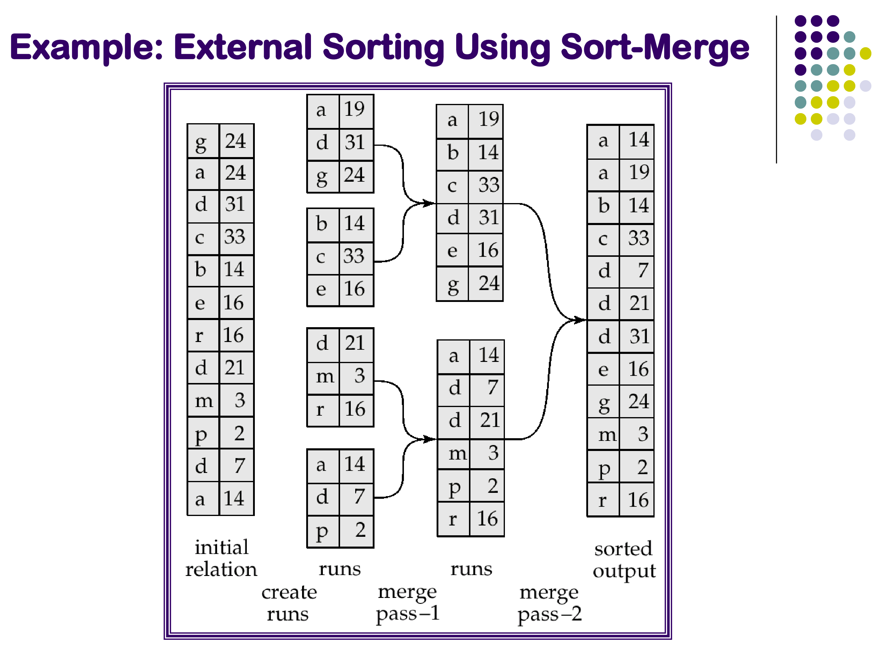
The example in the slide illustrates the algorithm concretely: a relation of 12 tuples, memory holding 3 tuples at a time. Phase 1 creates 4 sorted runs. Because memory cannot hold all 4 run buffers simultaneously in this tiny example, Phase 2 must merge in two sub-steps — but this is an artifact of the extremely small memory size in the illustration, not a typical behavior in practice.
External sort-merge vs partitioned hash join: for the specific problem of sorting, external sort-merge is the clear choice — hash join is a join algorithm, not a sort algorithm. For the problem of joining two large relations, both are applicable, and both have similar total I/O costs. External sort-merge (applied to produce sorted input for a sort-merge join) is generally preferred if you are building a system and want to implement only one external join strategy: it is simpler to implement, does not require a good hash function, and produces sorted output that benefits downstream operators.
8. Summary
This set of notes completes our coverage of query operator implementations. The key takeaways:
Sort-Merge Join: a symmetric join algorithm that operates on pre-sorted relations. Cost equals b_R + b_S (optimal) when inputs are already sorted. Requires much less memory than hash join. Produces sorted output, which can eliminate downstream sort steps. Roughly equivalent to hash join in overall cost; both are good choices.
Group-By and Aggregation: the hash-based approach maintains a running aggregate state per group in a hash table — compact and efficient for COUNT, SUM, MIN, MAX, and AVG. Aggregates like MEDIAN require storing full value lists. The sort-based approach first sorts on the grouping key and then scans contiguous groups — simpler code, better for order-sensitive aggregates, preferred when input is already sorted.
Duplicate Elimination: sort-based (compare consecutive tuples) or hash-based (hash set). PostgreSQL implements both duplicate elimination and grouping with the same HashAggregate physical operator, illustrating that one physical operator can serve multiple logical functions.
Set Operations: UNION ALL is a free append. UNION, INTERSECT, and EXCEPT require deduplication or join-like processing and are implemented via standard hash or sort-based techniques.
External Memory: when relations exceed available memory, divide-and-conquer strategies extend in-memory algorithms to disk. Partitioned hash join splits both relations on the join attribute (requiring two hash functions and ~3× the I/O of simple hash join). External sort-merge creates sorted runs and merges them (requiring only √b_S memory). These algorithms also underlie distributed joins in systems like Apache Spark, where “partitions” are sent to different machines rather than different disk files.